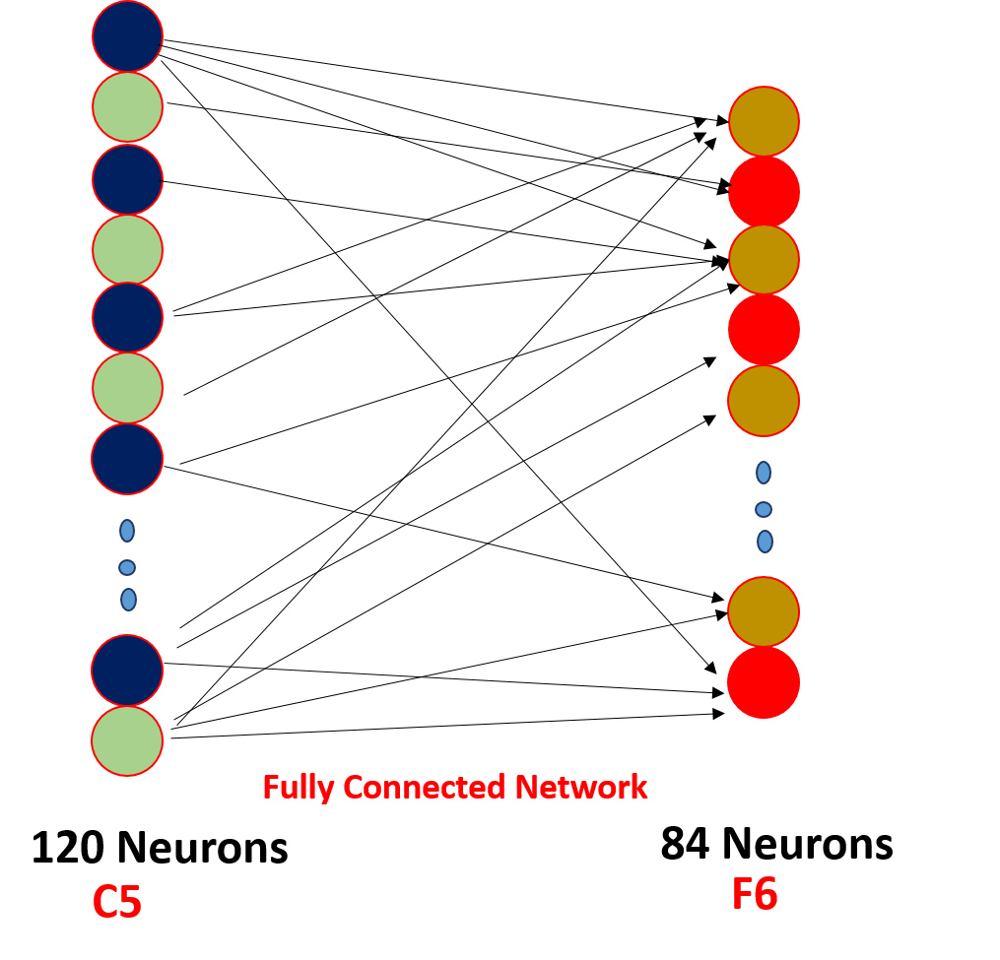
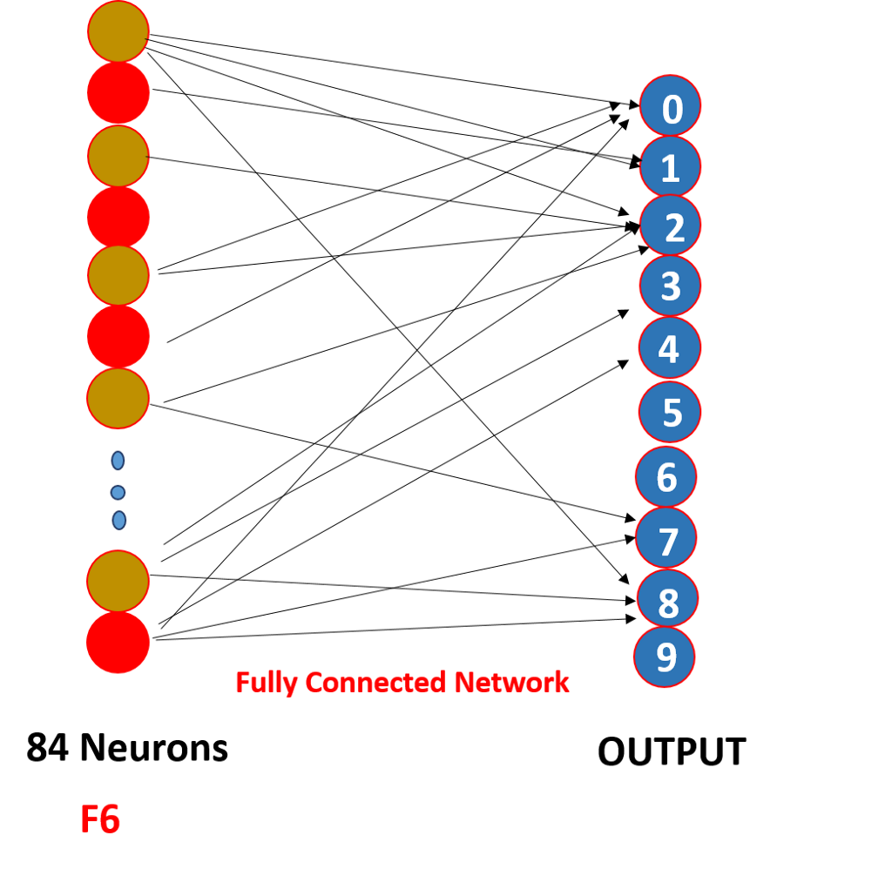
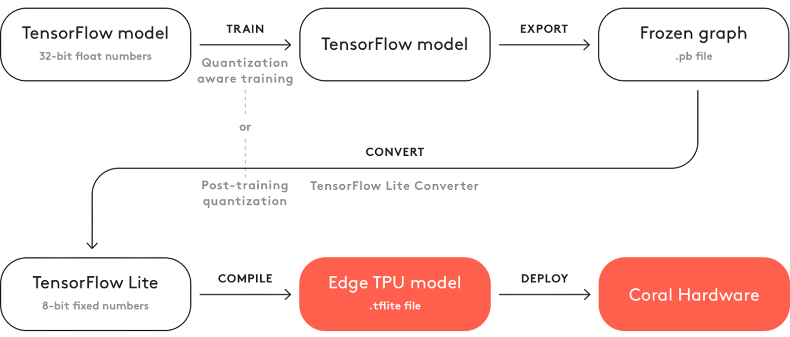
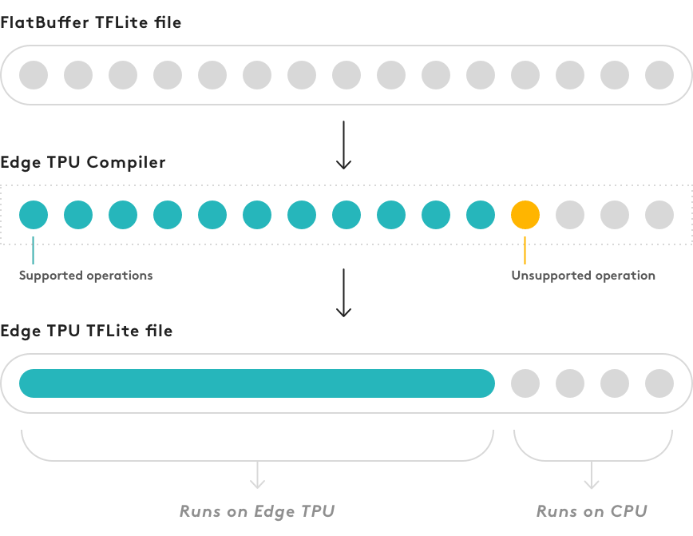

Laboratorio 2. Entrenamiento e inferencia para clasificación de imágenes sobre Google Coral
Objetivos
-
Entender, de forma intuitiva, la estructura general de una red neuronal de convolución (CNN) para clasificación de imágenes separando sus capas en dos clases: extracción de características y clasificación.
-
Entender el proceso y las ventajas de transfer learning para obtener una red adaptada a un conjunto de datos de entrada.
-
Practicar el proceso de transfer learning utilizando TensorFlow.
-
Exportar los modelos entrenados a formato TFLite.
-
Experimentar y evaluar el proceso de cuantización sobre un modelo real.
-
Desplegar un modelo preentrenado mediante transfer learning sobre la Raspberry Pi + Edge TPU para una aplicación concreta.
Gran parte del trabajo de este laboratorio se centra en el uso de Google Colab. Deberás crear una copia y trabajar en el siguiente cuaderno.
Modelos TensorFlow sobre Edge TPU (Google Coral)
El dispositivo Google Coral (que equipa un acelerador Edge TPU) es un hardware de propósito específico que puede ejecutar redes neuronales profundas (esto es, con múltiples capas), y es específicamente eficiente ejecutando redes neuronales de convolución (CNN), donde una o más de sus capas están formadas por operaciones de convolución sobre imágenes de entrada. Este tipo de redes combina una serie de capas iniciales de convolución dedicadas a la extracción de características, y una o más capas finalles fully connected (totalmente conectadas), cuyo cometido es específico del problema que pretenden resolver (por ejemplo, clasificación de imágenes).
En problemas de aprendizaje supervisado, el proceso de entrenamiento es un procedimiento iterativo (cuyas bases teóricas quedan fuera del alcance de esta asignatura), que persigue fijar, en base a observación de datos de entrada (datasets) etiquetados, unos pesos para cada una de las neuronas que componen cada capa (bien sea de convolución o bien totalmente conectada) que permitan ajustar la salida de la red neuronal, con un determinado grado de error, a la salida esperada.
Tomemos una red neuronal sencilla de ejemplo como la que se muestra a continuación:

En primer lugar, observa la estructura general de la red:
- Los datos (tensor) proporcionados a la capa de entrada tienen un tamaño fijo, en este caso un único canal de dimensiones
28 x 28píxeles. - El tensor (capa) de salida contiene 10 neuronas, que finalmente, en este caso, clasificarán la imagen de entrada como perteneciente a una de 10 clases posibles (una por dígito).
- A grandes rasgos, la estructura de la red se divide en dos partes (esta simplificación nos servirá en el resto del laboratorio):
- Un conjunto de capas de convolución y otras operaciones, englobadas en lo que llamaremos extractor de características.
- Un conjunto de capas donde todas las neuronas están conectadas entre sí, que llamaremos clasificador.
Estructura de capas
Las capas de convolución son el principal elemento que permite extraer características de una imagen. En última instancia, se basan en la aplicación de un conjunto de filtros a cada píxel de la imagen de entrada a la capa correspondiente, cuyos valores son realmente los pesos entrenables de la red neuronal. Las capas de convolució son configurables (en el momento de diseñar la red); algunas de estas características se listan a continuación.
Nota
La siguiente explicación pretende ser intuitiva más que científica, por lo que se emplaza al estudiante a los conocimientos adquiridos en otras asignaturas para una descripción más detallada del funcionamiento de cada uno de los elementos que componen una CNN.
Convolución
La aplicación de un filtro de convolución toma como entrada una imagen o fragmento
de la misma (en nuestro caso, un fragmento de dimensiones 5 x 5), y aplica en ella,
de forma ordenada, un conjunto de pesos en forma de filtro o kernel. El resultado final de
la operación se llama característica y comprende, para cada píxel de la característica,
una suma ponderada a través del filtro de cada uno de los elementos de la vecindad de la imagen anterior
para el píxel correspondiente:

Padding
Al aplicar convoluciones, las dimensiones de la característica de salida no coinciden con las de la entrada, por lo que es posible "perder" cierta información. Para ello, los bordes de la imagen de entrada suelen rellenarse con un valor (en el ejemplo siguiente, con ceros), mediante la operación llamada padding:

Striding
En ocasiones, no es deseable aplicar un filtro de convolución a todos los píxeles de entrada. En esos casos, la capa de convolución puede configurarse para que "salte" algunos de los píxeles (en el ejemplo siguiente, esta separación o stride es de dos unidades):

Pooling
La operación de pooling persigue resumir la información en una determinada imagen o característica, agrupando
los valores de la vecindad mediante una operación de tipo max o avg. Por ejemplo, podemos obtener únicamente
el valor máximo de una vecindad de 2 x 2 píxeles:

Función de activación
Una función de activación es un nodo situado a la salida de una determinada neurona, que permite determinar si dicha neurona se activará o no, por ejemplo:

La función ReLU (rectified linear unit) se utiliza típicamente en redes neuronales por su carácter no lineal: simplemente devuelve 0 si el valor de entrada es negativo, y dicho valor en caso contrario.
Capas fully-connected
Finalmente, las últimas capas (de clasificación) de la anterior red pasan por dos capas cuyas neuronas simplemente realizan una combinación lineal de sus entradas, ponderadas con unos pesos que también se fijarán en el proceso de entrenamiento y que, en última instancia, determinarán la clase a la que pertenece cada estímulo de entrada tras extraer las correspondientes características.
Un ejemplo de las tres últimas capas fully-connected podría ser, por ejemplo:


donde en última instancia, la capa de salida es un tensor unidimensional de 10 elementos al que están conectadas cada una de las neuronas de la capa anterior (lo mismo ocurre con la penúltima capa).
Flujo de trabajo típoco para el desarrollo de un modelo TensorFlow Lite para Edge TPU
Como se vio en el anterior laboratorio, TensorFlow Lite es una versión reducida del framework Tensorflow diseñada específicamente para dispositivos móviles y sistemas empotrados. Su objetivo es proporcionar alto rendimiento (básicamente, baja latencia o tiempo de respuesta) en procesos de inferencia o aplicación de una red neuronal a unos datos de entrada. Los modelos TensorFlow Lite pueden, además, reducir todavía más su tamaño (y por tanto aumentar su eficiencia) a través de un proceso llamado cuantización, que convierte los pesos (y otros parámetros) del modelo, típicamente representados mediante números en punto flotante de 32 bits, en una representación entera de 8 bits. Aunque en ocasiones este proceso simplemente persigue mayor eficiencia, en el caso del acelerador Edge TPU es obligatorio, ya que éste sólo soporta modelos Tensorflow Lite cuantizados (y, como veremos, compilados de forma específica para el dispositivo).
El proceso de entrenamiento no se realiza directamente con TensorFlow Lite,
sino utilizando TensorFlow y a continuación convirtiendo el modelo entrenado
resultante (en formato .pb) en un modelo TFLite (con extensión .tflite).
El proceso general de transformación de un modelo TensorFlow en un modelo
compatible con el dispositivo Edge TPU se muestra a continuación:

Sin embargo, no es estrictamente necesario seguir de forma completa este flujo de trabajo para obtener un buen modelo compatible con la Edge TPU. Una alternativa reside en aprovechar modelos TensorFlow ya entrenados mediante un proceso de reentrenamiento en base a tus propios datasets de entrada.
Transfer learning
Como hemos mencionado anteriormente, en lugar de construir un modelo propio y realizar un proceso de entrenamiento del mismo desde cero, es posible reentrenar un modelo ya compatible con el dispositivo Edge TPU, usando una técnica denominada transfer learning (o fine tuning).
Esta técnica permite comenzar con un modelo entrenado para una tarea similar a la que deseamos resolver, enseñando de nuevo al modelo a, por ejemplo, clasificar otro tipo de objetos mediante un proceso de entrenamiento utilizando un dataset de menores dimensiones. En este punto, existen dos mecanismos distintos para realizar el reentrenamiento:
- Reentrenar el modelo completo, ajustando los pesos de toda la red neuronal.
- Eliminando la(s) capa(s) final(es) de la red, típicamente dedicada, por ejemplo, al proceso de clasificación, y entrenando una nueva capa que reconozca las nuevas clases objetivo.
En cualquier caso, si se parte de un modelo compatible con la Edge TPU, cualquiera de las dos estrategias ofrecerá buenos resultados (siendo la segunda mucho más eficiente desde el punto de vista del tiempo de entrenamiento). El fabricante proporciona un conjunto de modelos base preentrenados que puedes utilizar para crear modelos personalizados.
Requisitos de los modelos
Para explotar al máximo las capacidades del Edge TPU, es necesario que el modelo desarrollado cumpla con ciertas características:
- Los tensores que se utilicen están cuantizados (usando punto fijo de 8 bits:
int8ouint8). - Las dimensiones de los tensores son constantes (no dinámicas).
- Los tensores son 1-D, 2-D o 3-D.
- El modelo sólo usa operaciones soportadas por la Edge TPU (véase siguiente sección).
Operaciones soportadas
Al construir un modelo propio, es necesario tener en mente que sólo ciertas operaciones serán soportadas de forma nativa por la Edge TPU. Si el modelo está formado por alguna operación no compatible, sólo se ejecutará en la TPU una porción del mismo (véase sección Compilación). La documentación de Google Coral y de TensorFlow contienen listas detalladas de las operaciones compatibles en ambos casos.
Cuantización
Cuantizar un modelo significa convertir todos los valores que éste almacena (por ejemplo, pesos y salidas de funciones de activación) desde valores en punto flotante de 32 bits a sus representaciones en punto fijo de 8 bits más cercanas. Esto, obviamente, hace que el modelo sea más pequeño en tamaño, y más rápido en respuesta. Además, aunque las representaciones en 8 bits son menos precisas, su precisión en el proceso de inferencia no se ve significativamente afectado.
Existen dos mecanismos principales para llevar a cabo la cuantización:
-
Entrenamiento consciente de la cuantización (Quantization-aware training). Esta técnica inserta nodos (neuronas) artificiales en la red para simular el efecto de usar valores de 8 bits en el entrenamiento. Por tanto, requiere modificar la red antes de comenzar con el entrenamiento inicial. Normalmente, esto repercute en un modelo con mayor precisión (comparado con la segunda técnica), porque los pesos de 8 bits se aprenden en el propio proceso de entrenamiento.
-
Cuantización post-entrenamiento (Full integer post-training quantization). No requiere ninguna modificación en la red, por lo que puede tomar como entrada una red ya entrenada para convertirla en un modelo cuantizado. Sin embargo, el proceso de cuantización requiere que se proporcione un conjunto de datos de entrada representativo (formateado de la misma manera que el conjunto de datos original). Este conjunto representativo permite que el proceso de cuantización determine el rango dinámico de las entradas, pesos y activaciones, factor crítico a la hora de encontrar una representación en 8 bits de cada peso y valor de activación.
Compilación
Tras entrenar y convertir el modelo a TFlite (con cuantización), el paso final es compilarlo utilizando el compilador de Edge TPU. El proceso de compilación puede completarse incluso si el modelo del que se parte no es 100% compatible con el dispositivo, pero en este caso, sólo una porción del modelo se ejecutará en el Edge TPU. En el primer punto en el que el grafo resultante incluya una operación no soportada, éste se dividirá en dos partes: la primera contendrá sólo las opreraciones soportadas por la Edge TPU, y la segunda, con las operaciones no soportadas, será ejecutada exclusivamente en la CPU, con la penalización de rendimiento que ello conlleva:

Tareas a desarrollar
Tarea
El siguiente cuaderno permite la creación de un modelo TFlite a partir de un modelo preexistente, usando la técnica de cuantización post-entrenamiento. Complétalo y obtén un modelo TFLite listo para ejecutar en la Edge TPU.
A continuación, utilízalo en los códigos que desarrollaste (para clasificación) en el anterior laboratorio y comprueba su correcto funcionamiento tanto desde el punto de vista del rendimiento comparado con la CPU, como de la precisión observada.
Tarea
Utilizando la misma filosofía que la seguida en el anterior cuaderno, se pide desarrollar una aplicación que realice la clasificación de imágenes de entrada en tiempo real, tomadas desde la cámara de la Raspberry Pi, utilizando un modelo preentrenado con conjuntos de datos de imágenes etiquetadas que representen caras portando o no mascarilla.
Para resolver el laboratorio, se pide diseñar y seguir el flujo completo de trabajo propuesto, basándose en el mismo modelo base (Mobilenetv2), pero reentrenándolo con conjuntos de datos apropiados (puedes buscarlos por internet) y usando la Edge TPU como plataforma aceleradora.
Se entregará una memoria del trabajo desarrollado, junto con los códigos y modelos obtenidos, así como una breve demostración de funcionamiento de la solución.